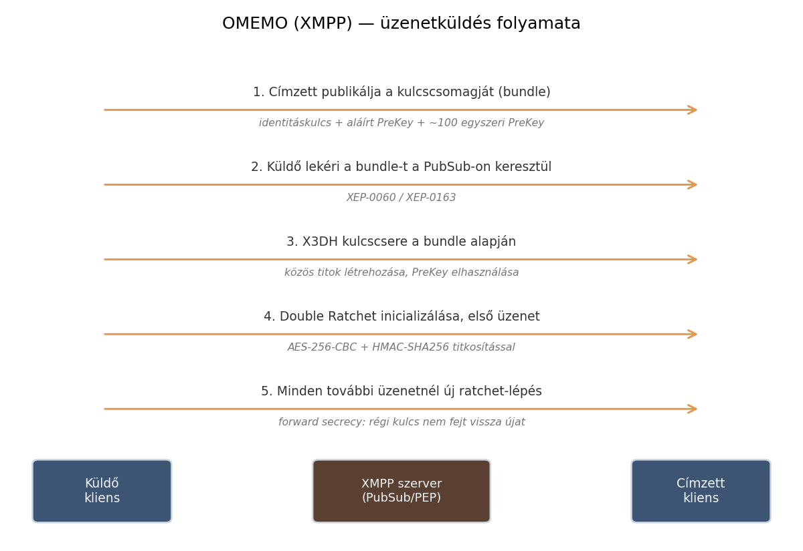
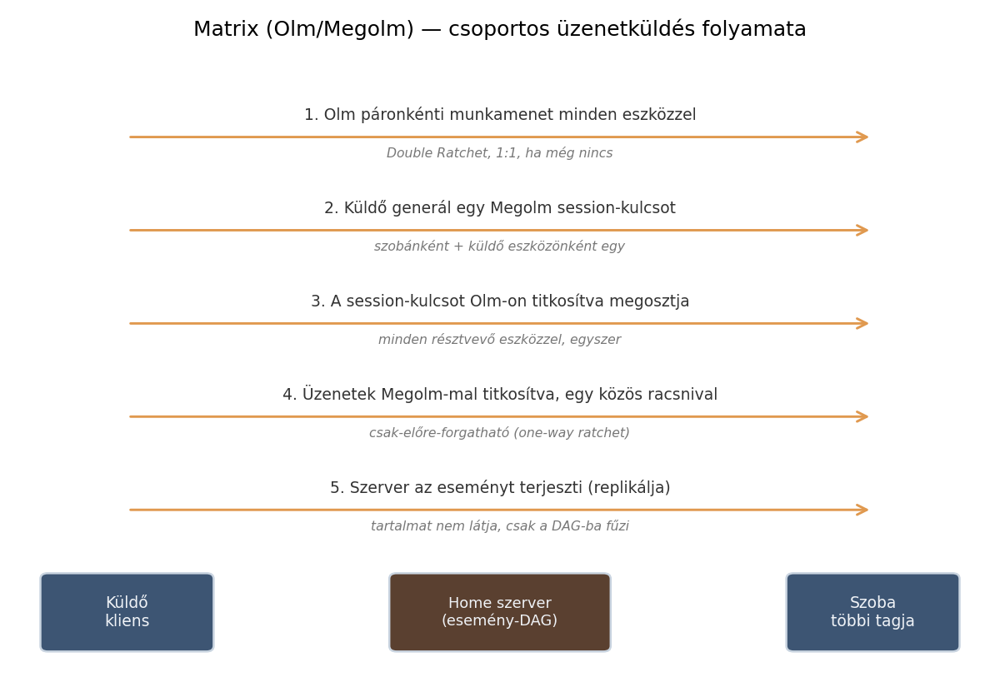

Chat alkalmazás alternatívák¶
Cél: hasonló, létező megoldások áttekintése ahhoz a tervezett alkalmazáshoz, amely egy kis közösség/család számára készülő, saját szerveren futtatható, minimalista, végpontok között titkosított üzenetküldő rendszer, XMPP-elvekre építve.
Protokoll szint¶
XMPP¶
Hivatalos oldal: xmpp.org | Szabvány: RFC 6120 (core), RFC 6121 (IM)
1999-ben, eredetileg Jabber néven indult, azóta az IETF szabványosította,
és mára több mint 400 kiegészítő protokoll (XEP) épült rá. Az üzenetek
XML-alapú "stanza"-kban (<message>, <presence>, <iq>) közlekednek
egy folyamatosan nyitva tartott TCP-kapcsolaton keresztül. Ez pontosan az
az irány, amit a projekt is követ: könnyű, saját hosting-ra alkalmas,
decentralizált protokoll (federáció: különböző szerverek felhasználói
tudnak egymással kommunikálni, mint az e-mailnél).
Erőforrás-igénye kifejezetten alacsony — egy 1 GB RAM-os VPS-en egy XMPP szerver a memória mindössze kb. 1,4%-át használta, míg egy ugyanott futó Matrix szerver 27,7%-ot.
Az E2EE nála nem alapértelmezett, hanem az OMEMO (XEP-0384) kiegészítésen keresztül érhető el, ami a Signal Protocol Double Ratchet algoritmusára épül, de XMPP-kompatibilis kulcscsere-mechanizmussal. A technikai működés dióhéjban: minden eszköz publikál egy kulcscsomagot ("bundle") — egy Ed25519 azonosító kulcsot, egy aláírt PreKey-t, és kb. 100 egyszer-használatos PreKey-t —, amit a PEP (XEP-0163, a Personal Eventing Protocol) és a mögötte lévő PubSub (XEP-0060) mechanizmuson keresztül tesz közzé. Amikor egy másik felhasználó üzenetet szeretne küldeni, lekéri ezt a csomagot, és ezzel indítja el az X3DH-szerű kezdeti kulcscserét, amit aztán a Double Ratchet visz tovább — az üzenettartalom titkosítására AES-256-CBC + HMAC-SHA256 kombinációt használ. Mivel ez az egész a meglévő XMPP-infrastruktúrára (PubSub) épül, szinte semmilyen szerveroldali módosítást nem igényel — ez az egyik fő oka annak, hogy OMEMO-t viszonylag könnyű hozzáadni egy meglévő XMPP-szerverhez. Mivel ez csak kiegészítés, egy szerver teljesen szabványos maradhat úgy is, hogy sosem támogatja az OMEMO-t. Népszerű szerver-implementációk: Prosody, ejabberd.
Az alábbi ábra a fent leírt lépéseket foglalja össze folyamat szinten:

1. ábra: OMEMO (XMPP) — üzenetküldés folyamata a kulcscsomag publikálásától az első titkosított üzenetig.
Matrix¶
Hivatalos oldal: matrix.org | Specifikáció: spec.matrix.org
Újabb protokoll, esemény-alapú architektúrával: minden szoba egy eseménygráf (DAG - Directed Acyclic Graph), amit a résztvevő szerverek egymás között replikálnak (hasonló elven, mint egy elosztott adatbázis). Az E2EE-t az Olm (páronkénti, 1:1 munkamenetekhez, a Signal Protocol Double Ratchet-jének implementációja) és a Megolm (csoportos szobákhoz optimalizált) algoritmusok biztosítják, alapból bekapcsolva. A Megolm technikailag eltér az OMEMO/Signal megközelítéstől: nem minden résztvevőhöz külön Double Ratchet munkamenetet tart fenn (ami egy 200 fős szobában 199 külön munkamenetet jelentene), hanem egy közös, csak-előre-forgatható (one-way) racsnit használ szobánként és küldő eszközönként — ezt a kezdeti kulcsot Olm-on keresztül, titkosítva osztja meg minden résztvevővel. Ennek következménye egy tudatos biztonsági kompromisszum: aki megszerzi egy adott ponton a racsni állapotát, onnantól előre tud minden üzenetet visszafejteni (amíg a kliens újra nem indítja a munkamenetet), viszont a korábbi üzeneteket nem — ez gyengébb garancia, mint az OMEMO/Signal üzenetenkénti kulcsváltása, cserébe nagy létszámú szobáknál számításigényben sokkal hatékonyabb. Erős a hídépítő (bridging) képessége más platformok (Discord, Telegram, IRC) felé. Cserébe jóval nagyobb erőforrást igényel, és a hivatalos szerver-szoftver (Synapse) admin oldalról nehézkesebb, mint az XMPP szerverek — újabb, könnyebb implementációk (pl. Conduit) ezen próbálnak javítani.
Az alábbi ábra a Megolm session-kulcs terjesztésének és a csoportos titkosításnak a folyamatát mutatja:

2. ábra: Matrix (Olm/Megolm) — csoportos üzenetküldés folyamata. Jól látszik a különbség az OMEMO-hoz (1. ábra) képest: ott minden üzenethez páronkénti ratchet-lépés történik, itt egy szobánkénti közös racsni-kulcsot osztanak meg egyszer, Olm-mal titkosítva.
Signal¶
Hivatalos oldal: signal.org | Protokoll dokumentáció: signal.org/docs
A legelterjedtebb, iparági referenciának számító E2EE megoldás — innen ered a Signal Protocol/Double Ratchet is, amit az XMPP OMEMO és a Matrix Olm/Megolm is átvett. Nem alkalmas viszont a projekt céljaira, mert alapvetően centralizált: a Signal szervere zárt forráskódú, nincs hivatalos, interoperábilis módja annak, hogy valaki saját szerveren futtassa, kompatibilis módon a hivatalos Signal-hálózattal.
Kisebb, kevésbé elterjedt alternatívák¶
- Session — Signal-fork, decentralizált, Oxen blokklánc-alapú üzenettovábbítással (nincs központi szerver)
- Briar, Tox — peer-to-peer megoldások, alacsony elterjedtség
- Delta Chat — e-mail alapú (SMTP/IMAP fölé épített E2EE réteg, Autocrypt szabvánnyal), bárkinek van már e-mail címe, de a szolgáltatók nem-szabványos implementációi miatt kompatibilitási problémák adódhatnak
Konkrét alkalmazás szint¶
| Alkalmazás/szoftver | Link | Típus | Titkosítás | Miben hasonlít a projekthez |
|---|---|---|---|---|
| Snikket | snikket.org | Előre konfigurált, Docker-alapú XMPP szerver | OMEMO (alapból bekapcsolva) | Pontosan erre a célra készült: család/baráti kör könnyen üzemeltetheti saját szerveren, minimális beállítással |
| Conversations / Dino | conversations.im / dino.im | XMPP kliens (Android / desktop) | OMEMO | Snikket vagy saját Prosody/ejabberd szerverrel párosítva funkcionálisan nagyon közel áll a tervezett rendszerhez |
| Element | element.io | Matrix kliens | Olm/Megolm | Letisztult, több platformos, self-hosted szerverrel (Synapse/Conduit) családi körben is használt |
| SimpleX Chat | simplex.chat | Fiók/telefonszám nélküli üzenetküldő | Double Ratchet | Minimalista, identitás nélküli filozófia — inspiráció a letisztult felhasználói élményhez |
| Rocket.Chat / Zulip / Mattermost | rocket.chat / zulip.com / mattermost.com | Csapat-kommunikációs platformok | opcionális/plugin-függő | Szintén self-hosted, nyílt forráskódú, de jóval nagyobb léptékű — jó ellenpélda arra, miben szeretnénk egyszerűbbek maradni |
Következtetés a projekthez¶
A legközelebbi analógia a Snikket + Conversations/Dino kombináció: kis léptékű, saját szerver, gyors telepítés, XMPP-alapú, OMEMO titkosítással.
A tervezett projekt ennek egy saját fejlesztésű, Node.js-alapú, webes (HTML/JS kliens) változata, ugyanazokkal az alapelvekkel (nyílt, decentralizált, strukturált üzenetküldés), a Rocket.Chat/Zulip/Mattermost-féle nehezebb platformoknál jóval egyszerűbb, minimálisabb célkitűzéssel.
A tervezett rendszer komponenseinek felépítése az Architektúra oldalon található ábrán látható.